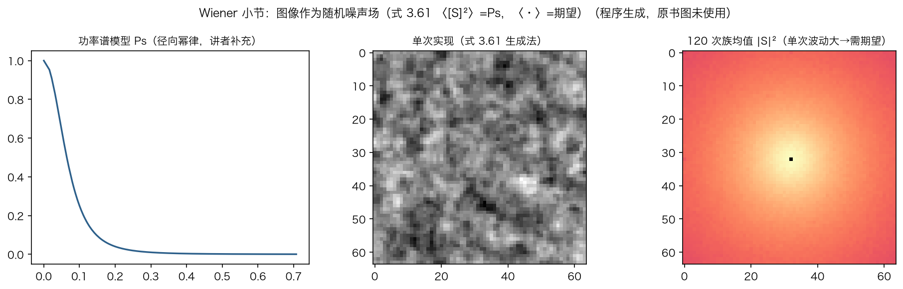
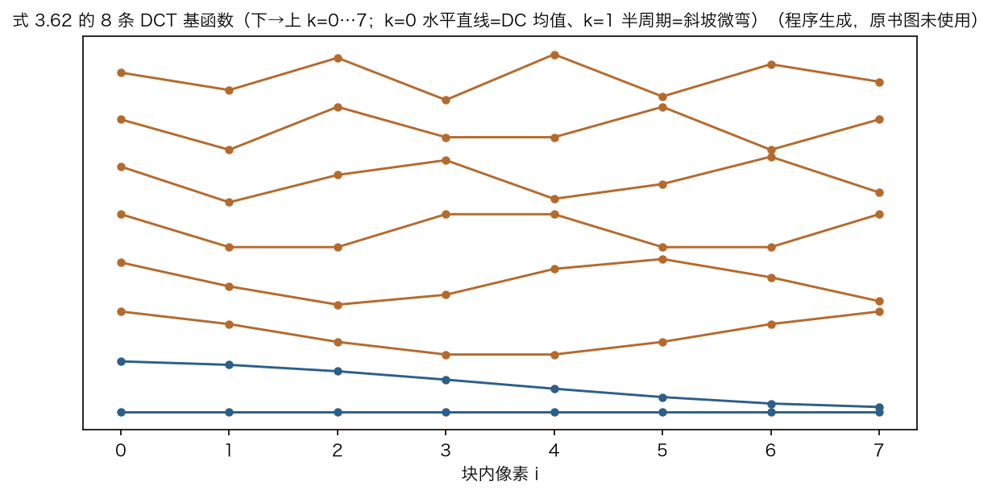
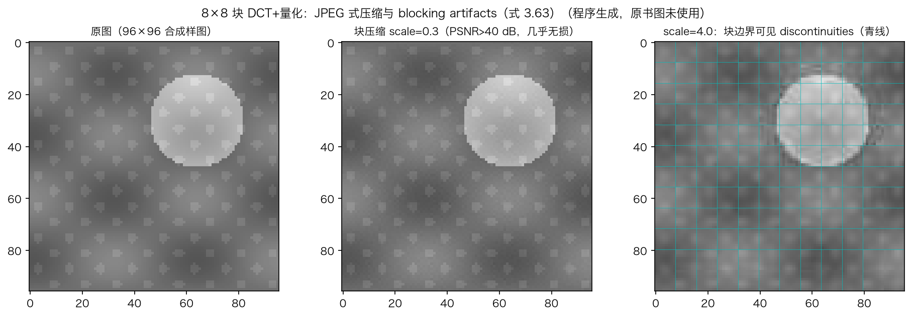
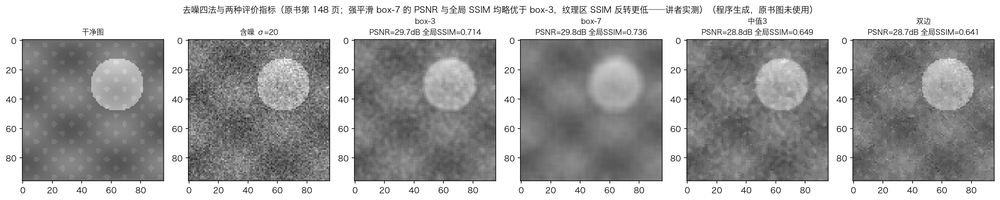

本集路线 · 从二维频谱到去噪
一维的公式，搬进二维图像
先铺开：二维频谱与有向正弦。
再压缩：DCT、JPEG 与块伪影。
最后看版图：去噪方法与评价尺。
二维谱、DCT、去噪，各有实验读数。
依据：原书第 146–149 页
本集三步
铺开：二维频谱
压缩：DCT 与 JPEG
版图：去噪与评价
正课第二十集
01 / 10
原书第 146 页 · 二维傅里叶变换
条纹不只横竖，还能斜着走
有向正弦：s 等于 sin(ωx x 加 ωy y)。
连续变换对横、纵坐标做二重积分。
离散变换前面乘 M 乘 N 分之一。
M、N 是图像的宽和高。
依据：原书第 146 页 + 本集实验
s(x, y) = sin(ωx x + ωy y)
式 3.58；离散域见式 3.60，带 1/(MN) 归一
正课第二十集
02 / 10
原书第 146 页 · 功率谱
谱还能描述一整类图像
把图像看成随机噪声场。
功率谱是每个频率上的期望幅度平方。
谱上填高斯随机数，再做一次逆 FFT。
六百次平均，族均值落回功率谱。
依据：原书第 146–147 页 + 本集实验

功率谱模型、单次实现与 120 次族均值｜程序生成，未用教材或论文原图
正课第二十集
03 / 10
原书第 147 页 · 离散余弦变换
DCT：为按块压缩而生
DCT 是傅里叶变换的变体，适合块压缩。
像素块与不同频率的余弦做点积。
半像素偏移让基系数对称。
第一条基是块平均，第二条是斜坡微弯。
依据：原书第 147 页 + 本集实验

八条一维 DCT 基：k=0 直流，k=1 半周期｜程序生成，未用教材或论文原图
正课第二十集
04 / 10
原书第 147–148 页 · DCT 的性质
为什么偏偏用余弦
DCT 是自然图像小块上 K-L 分解的好近似。
K-L 把信号去相关到最彻底。
二维 DCT 行、列各做一遍，可分离。
每一遍只要 N 乘 log N 量级。
依据：原书第 147–148 页 + 本集实验
F(k,l) = ΣΣ cos((π/N)(i+½)k) · cos((π/N)(j+½)l) · f(i,j)
式 3.63；先对每行做，再对每列做
正课第二十集
05 / 10
原书第 148 页 · JPEG 与块伪影
压缩在用它，也怕它
DCT 广泛用于图像与视频压缩。
替代方案有小波与交叠版 DCT。
块独立变换与量化，接缝处出现不连续。
轻量化几乎无损；狠量化边界明显。
依据：原书第 148 页 + 本集实验

八乘八块 DCT：轻量化与强量化的块边界｜程序生成，未用教材或论文原图
正课第二十集
06 / 10
原书第 148 页 · 锐化、模糊与去噪
一页点名两族滤波
锐化、模糊、去噪，核心都是邻域处理。
过去用线性滤波，今天更常用非线性。
加权中值、双边、各向异性扩散、非局部均值。
变分与全变差；深度网络后来接管。
依据：原书第 148 页
两族滤波
线性：均值、高斯
非线性：中值、双边
各向异性扩散
全变差、深度网络
正课第二十集
07 / 10
原书第 101/148–149 页 · 评价指标
给去噪打分：两把尺
PSNR：峰值强度平方比均方误差，取对数。
八位图里，峰值强度取 255。
SSIM、FLIP 量的是感知相似度。
神经感知指标偏好相近的纹理量。
依据：原书第 101/148–149 页 + 本集实验
PSNR = 10 log₁₀(Imax² / MSE)
式 2.120；八位图 Imax 取 255
正课第二十集
08 / 10
本集实验 · 去噪四法
全局分数与局部纹理的分歧
样图加标准差 20 的高斯噪声。
四法：三乘三、七乘七、中值、双边。
PSNR 28.8 到 29.8 分贝，全部高于含噪图。
纹理区 SSIM 反转：七乘七低 0.05。
依据：本集实验 + 原书第 148–149 页

去噪四法对比：三乘三、七乘七、中值、双边｜程序生成，未用教材或论文原图
正课第二十集
09 / 10
原书第 146–149 页 · 本集小结
三步收束：频谱、压缩、版图
铺开：有向正弦、二维变换、功率谱。
压缩：DCT、余弦基、能量集中、块伪影。
版图：去噪谱系与评价两把尺。
下一集：改变分辨率，图像金字塔与小波。
依据：原书第 146–149 页
三件事
二维频谱
DCT 与压缩
去噪与评价
正课第二十集
10 / 10